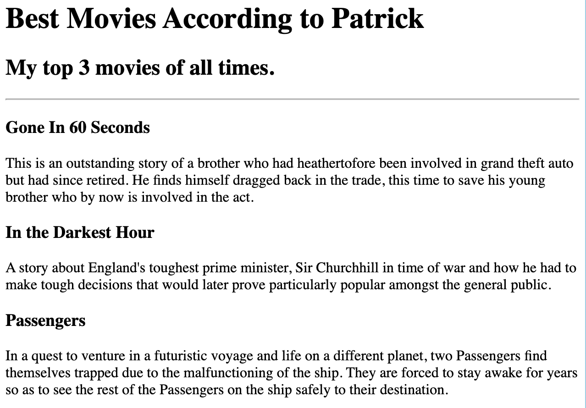

Patrick's Portifolio
Welcome to my professional Portifolio
Through Portifolio, I look forward to connecting with like interested folks who have the passion for art and creativity. Join me on this adventure.
Recent Designs By Myself
Birthday Invite

Movie Rankings

Other pages
Contact Me
About Me